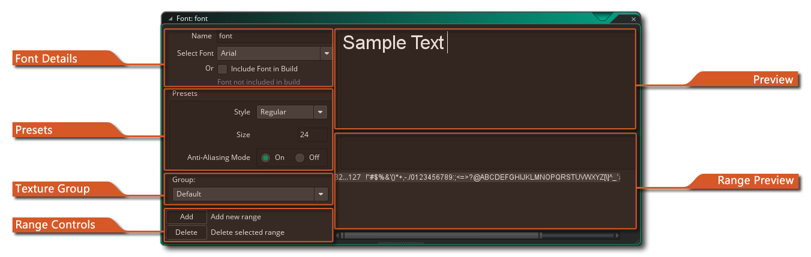

 When you want to draw text in your game this text is
drawn in a standard Arial 12 points font, but to make more
interesting or unique looking texts you will probably want to use
different fonts. So, to use different fonts that you have on your
computer you must create a font resource in GameMaker
Studio 2. This is done by right clicking  on the
"Fonts" folder in the resource tree and clicking on "Create". For
each font resource you create you specify a particular type of font
from your computer which can then be used in your game using the
action or code to set a font for drawing.
on the
"Fonts" folder in the resource tree and clicking on "Create". For
each font resource you create you specify a particular type of font
from your computer which can then be used in your game using the
action or code to set a font for drawing.
When you first create a font resource the font editor window will open with the following options:
Here you can give your font a unique name (alpha numeric characters and the "_" under-bar symbol only), as well as choose the font to use. The font must be installed on your machine and due to licensing issues, GameMaker Studio 2 does not store the actual font files with the project file by default, but rather the font is rendered to a texture page as pre-rendered glyphs. If you want to distribute the actual font file (*.ttf only) along with the project when making a Marketplace asset, then you can check the option Include Font In Marketplace Asset. This will open the file explorer where you can select the font file and it will then be added to the files bundled with the project.
IMPORTANT NOTE: You should only use fonts that you are legally permitted and licensed to redistribute or use in your project.
In this section you can set the size (in points - default is 12pt) and whether the font should be drawn as bold or italic or have anti-aliasing (edge smoothing) applied. The preview window on the right will show you the preview text as it will look with the size and transforms you have specified.
As mentioned above (in the section on Font Details) by default all font glyphs will be rendered to a texture page as part of a texture group to convert them into graphical resources. This section of the Font Editor permits you to select which group you wish to add them to, and when the game is compiled the font will be added to a temporary texture to create a single image with all the required font glyphs and then this will be added to the main texture group for exporting. Note that if you have chosen to include the font file as part of the game build, this option will do nothing. For more information on Texture Groups, please see here.
When creating a font resource it's rare that you'll want to include every single glyph for the font. This is why GameMaker Studio 2 defaults to using only the characters from 32 till 127 of the chosen font as this gives us the numbers and the small and capital letters along with certain punctuation marks. You can, however, change the character range used to help optimise your games ie: if you only need the numbers from a specific font, then only select the numbers. To do this, you should first click the Delete button to clear the current range (you may need to select the range for this to work by clicking
on it in the preview window) and then click on the Add button to add a new range. This will open the following chained window:
This window has some buttons to help you establish a standard range for your font:
- The Normal range from 32 till 127
- The ASCII range from 0 till 255
- The Digits range that only contains the 10 digits
- The Letters range that contains all upper-case and lower-case letters onlyOther ranges can be used by typing in the first and last character index of the range you wish to set in the character range input boxes (if a character does not lie in the range it is replaced by a space). Apart from these buttons and input boxes, you also have two further options which are especially useful:
- From Code: if you click on this button and then click OK, GameMaker Studio 2 will automatically parse your game code for strings and then create different character ranges to cover all the text in your game. Note that it looks for all strings (either within "" or '') and so may also include file names in the character ranges.
- From File: this works similarly to the "from code" option explained above. If you click on it, you will be asked to supply a file, and then once that is done you should click on OK. GameMaker Studio 2 will then parse the file and create character ranges for the text found within it.
Note that you can manually edit the text range by adding or deleting text glyphs into the preview window directly.
The preview window is where you can type any text that you want to test. It will be rendered using the presets that you have selected.
Here the different ranges that you have added will be listed. The range values are shown on the left and the range glyphs are shown on the right.

Note that when you create a font resource, the glyphs in the font are used to generate bitmap (PNG format) image, which is what is used to render any text to the screen in your games. This PNG image is stored along with the YYP and YYZ files, and may need regenerated if you have imported the project on a machine where the original font is missing or has been renamed or there is a font with the same name but different characteristics. If you run your project after import and you see issues with the font rendering, then you can either delete the font resource from the resource tree and then re-create it, or you can open the font resource, change the font being used, then change it back again to the original font (if available or required).